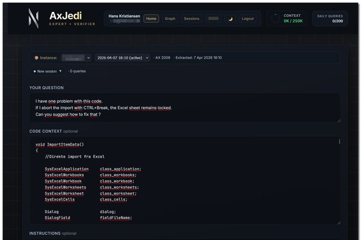
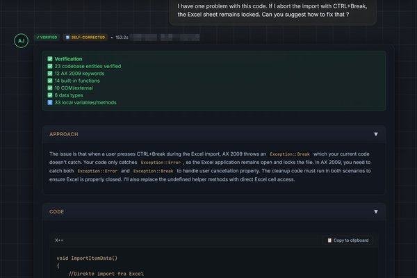
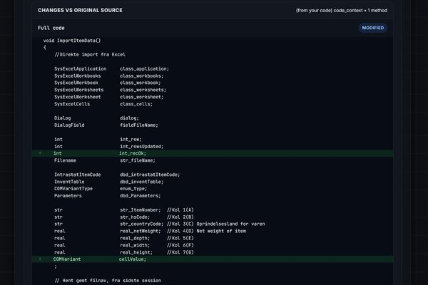
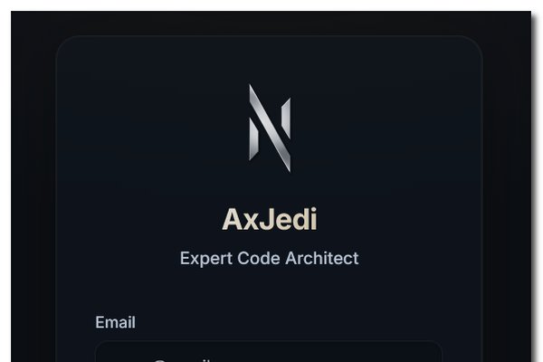
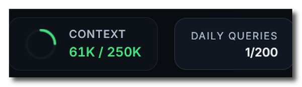
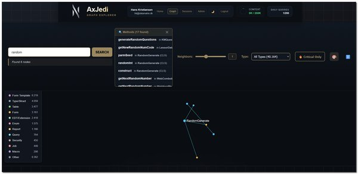

The Promise
"Just ask ChatGPT to solve your Axapta programming challenge - perfect, plug-and-play code within minutes."
AX 2009 & AX 2012 AI Code Generation
AxJedi generates X++ grounded in your own AX 2009 or AX 2012 codebase so teams ship faster without hallucinated identifiers, broken assumptions, or cross-version drift.
"Just ask ChatGPT to solve your Axapta programming challenge - perfect, plug-and-play code within minutes."
"Generalized code with a high percentage of functions that are either outright hallucinated or not available in your specific version of Axapta - and completely unaware of your actual codebase."
"Code grounded in YOUR codebase, verified against 500,000+ identifiers, version-locked to YOUR AX version. Code that compiles - not code that looks right."
This system is built for AX implementation reality: strict schema fit, reliable identifiers, and deployable output in minutes.
AxJedi digests your entire XPO codebase - every class, table, method, enum, form, and relationship. When it suggests code, it references YOUR actual entities, not Stack Overflow examples from a different AX version.
Every identifier in every code suggestion is verified against your actual codebase database (500,000+ verified identifiers). If we hallucinate, the query doesn't count.
Every response includes: Approach (strategy), Code (verified X++), Codebase Fit (YOUR system), Explanation (method breakdown), and Learning Point (patterns and best practices).
One click generates a properly formatted XPO file ready for direct import into AX. See exact changes with diff view. Keep version history.
Powered by Anthropic's Claude Sonnet 4 and Opus 4.6. Auto-escalation: if fast can't verify, it automatically escalates to deep analysis. This isn't a ChatGPT wrapper.
Hundreds of hours of development went into AxJedi's verification pipeline, codebase intelligence, and agentic orchestration. This system utilizes frontier AI at the absolute forefront of current agentic technology.
Generic AI tools like ChatGPT, Copilot, and Claude.ai produce code that looks right but doesn't compile in YOUR system. Here's what makes AxJedi fundamentally different.
| Feature | AxJedi | Generic AI (ChatGPT, Copilot, etc.) |
|---|---|---|
| Knows your codebase | ✅ Every class, table, method | ❌ Generic X++ |
| Verified identifiers | ✅ 500,000+ checked | ❌ Hallucinated names |
| AX version-aware | ✅ Version-locked (2009 & 2012) | ❌ Mixes 2009/2012/D365 |
| XPO export | ✅ One-click | ❌ Copy-paste |
| Codebase relationships | ✅ 180K+ node graph | ❌ No context |
| Self-correcting | ✅ Auto-escalation | ❌ Single shot |
Use Cases
When experienced AX developers retire, decades of institutional knowledge walks out. AxJedi captures that knowledge in the codebase graph and makes it queryable by anyone.
New developers ask AxJedi to explain unfamiliar code, understand dependencies, and learn team patterns instead of interrupting senior colleagues for weeks.
Stop chasing ChatGPT hallucinations. AxJedi verifies every identifier against your real codebase. Code that compiles, not code that merely looks right.
Suggestions follow YOUR teams patterns, not generic examples. AxJedi knows how your codebase handles inventory, customers, production orders.
AX 2009 and 2012 specialists are increasingly rare and expensive. AxJedi preserves and amplifies that expertise, available on demand.

Ask your question naturally with full code context. Paste X++ methods, form code, or describe what you need. AxJedi understands AX 2009 and 2012 syntax and works with your specific codebase objects.
Get comprehensive verified responses organized into approach, working code, detailed explanation, edge cases, and testing guidance. Every identifier is checked against your real codebase with no hallucinations.
See exactly what changed with color-coded diffs. Green for additions, red for removals. Review modifications line by line before applying anything, with full method context so nothing is lost.
Secure access with individual user accounts, IP restriction, and rate limiting. Each developer gets their own session history and usage tracking for full accountability.
The Context Size indicator shows exactly how much of the AI models capacity is being used. Unlike other AI tools, AxJedi is transparent about when queries approach the limits of reliable analysis.
Visualize your codebase as an interactive knowledge graph with over 180000 nodes showing classes, tables, forms, and their relationships. Search any entity and explore its full dependency network.Data Security
Your XPO file stays on our dedicated infrastructure. Only query-relevant code snippets are sent for AI analysis. The full codebase never leaves our servers.
We use Anthropics commercial API which contractually guarantees no model training on your data and only 7-day retention. Fundamentally different from consumer AI products.
When developers paste code into ChatGPT or Claude.ai, that data can be stored for years and used for training. AxJedi architecture gives you control over what is shared.
Our Context Size indicator shows exactly how much of the AIs capacity is being used. You always know when queries approach limits of reliable analysis. No other AI tool offers this.
Getting started takes about 24 hours:
{kind=link}
{kind=link}
{kind=link}